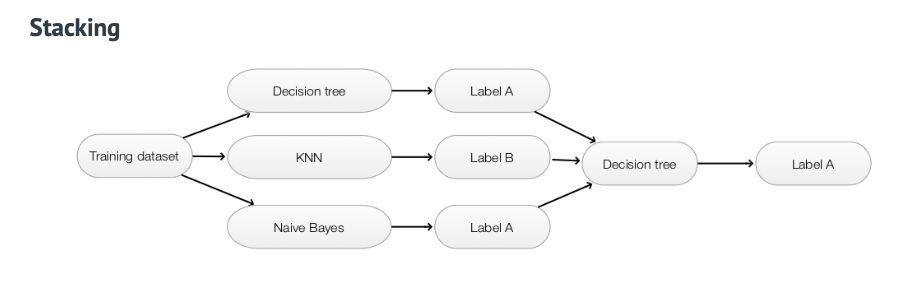
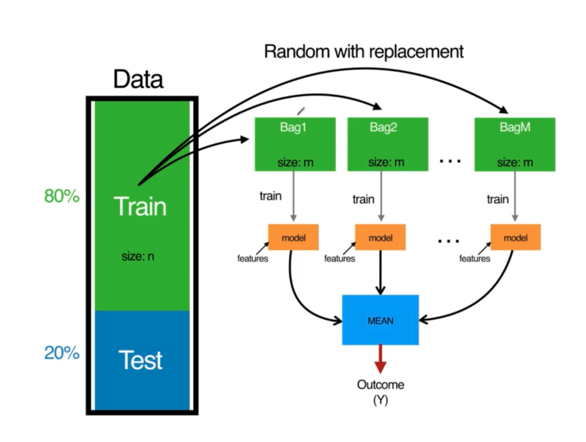

Q Decision Tree Ensemble Methods
Random Forest Trees
zowel voor regressie als classificatie
Decision trees
blad van de boom = label van de klasse zelf
je splits de data op obv feature values en blijft splitsen obv een vraag tot je zuivere groeperingen hebt.

Maar hoe bepaal je hoe en waar te splitsen ?
Entropy en information gain
Entropy = maat voor de wanorde (lager getal = minder choas, meer op orde)
Eenheid van entropy = bit
Entropy H = maat voor de wanorde (gemiddlede informatieinhoud)
$H = \sum_{i=1}^{N} p_i log_2( \frac{1}{p_i} )$
$H = - \sum_{i=1}^{N} p_i log_2(p_i)$
Als scheidingslijn trekt dan is de entropy te bepalen door die voor elke kant van de scheidingslijn te berekenen en dan de som te maken van bekomen entropys vermenigvuldigd met een gewicht. Dat gewicht bepaal je door het aantal datapunten van die kant van de scheidingslijn te delen door het totaal aantal datapunten (zowel links als rechts van de scheidingslijn)
Als je dan wil weten of dit beter of slechter is dan een vorige scheiding (of geen scheiding) dan kan je dit door de information gain te berekenen.
Je gaat dan na hoeveel minder ordelijk/wanordelijk de scheiding nu is.
Information gain = entropy voor de split - entropy na de split
Splits telkens bij de split die je hoogste information gain oplevert.
Gini impurity
Alternatief voor gebruik van entropy.
Gini impurity = maat voor hoe vaak een willekeurig gekozen element van de set verkeerd gelabeld zou worden als het willekeurig gelabeld werd volgens de disitributie van de labels in de subset (= mate van onzuiverheid)
$G = 1 - \sum_{i=1}^{N} p^2_i$
Voor elke klasse ga na hoe groot de kans is dat correct gelabeld is (= aantal voorkomens van die klasse / het totaal aantal voorkomens) en maak de som van de kwadraten. Dit kan je doen voor het geheel zonder/met op te splitsen.
Indien opgeplistst maak je gebruik van de gewogen Gini impurity. Voor elke zijde van de scheidingslijn bereken je de Gini impurity en vermenigvuldig je dit met een gewicht. Dat gewicht bepaal je door het aantal datapunten van die kant van de scheidingslijn te delen door het totaal aantal datapunten (zowel links als rechts van de scheidingslijn)
Hoe kleiner het getal hoe zuiverder de scheiding is.
Splits telkens bij de split di je de laagste Gini Impurity oplevert.
Bij de bepaling van decision tree staat default op Gini. Gini geeft zelfde resultaat als Entropy en rekent veel sneller.
Nadeel van opbouw kansenboom ?
Je kan makkelijk overfitting krijgen doordat je probeert elke datapunt in zijn eigen hokje te krijgen. Je krijgt een enorme boom. Een manier om dat op te lossen is werken met Random Forest Trees.
Random forest trees
Om de problematiek van neiging tot overfitting bij decision trees op te lossen.
Oplossing : combineer de voorspellingen van verschillende gerandomiseerde trees tot één model.
_Nicolas de Condorcet (1743 - 1794)_
Given a jury of voters and assuming in- dependent errors. If the probability of each single person in the jury of being correct is above 50% then the proba- bility of the jury being correct tends to 100% as the number of persons in- crease.
Op random stukken van de trainingset een decision tree maken. Elke tree een voorspelling laten doen en je gebruikt Majority voting (meerderheid wint) om te bepalen wat het eindresultaat is.
Hyperparameters van een random forest tree
- n_estimators: number of trees in the forest. Meestal hoe meer hoe beter.
- Criterion: Gini of Entropy (default Gini)
- Maximum number of features: het maximum aantal features per boom.
- int : aantal features
- float: percentage
- ’auto’: max_features = vierkantswortel van totaal aantal features
- ’sqrt’: max_features = vierkantswortel van totaal aantal features
- 'log2’: log van het totaal aantal features
- Default worden alle features gebruikt.
- max_depth: de maximale diepte van de boom. Als je te maken hebt met noisy data is het aan te raden de maximale diepte beperkt te houden
- min_samples_split: het minimum aantal samples nodig om binnen een boom te blijven splitsen.
- min_samples_leaf: het minimum aantal samples dat zich aan een blad van de boom moet bevinden. Hoe groter deze waarde, hoe minder vatbaar voor overfitting.
- Bootstrap aggregating: Bagging (zie verder). Staat default op True.
- oob_score: de gemiddelde error bij het testen van een sample op bomen die niet op deze sample getraind zijn geweest.
Ensemble Methodes
verzameling van methodes die we al gezien hebben.
classifiers die we al gezien hebben combineren tot één classifier
Wat zijn ensembles?
Een ensemble is een combinatie van verschillende classifiers die samen een uiteindelijke klasse voorspellen.
Werken meestal beter dan een enkele classifier
De classifiers moeten verschillend zijn van elkaar (diverse classifiers)
Hoe een ensemble learner bouwen ?
stacking

obv volledige trainingset ga je verschillende modellen trainen (SVM, Naibe Bayes, ..) Het resultaat ga je laten classificeren door een nieuwe classifier. De predicties van de modellen is input voor de classifier die de uiteindelijke predicties gaat doen.
bagging (bootstrap aggregating)
methode om de variantie te reduceren en overfitting te vermijden
maak verschillende subsets (bags) van traingingsdata om een model te trainen :
- neem een bepaalde percentage (meestal 60%) aan willekeurige datapunten en in steek ze in de bag
- het is met teruglegging dus zelfde datapunt kan verschillende keren voorkomen in de bag
- train met de bag een model/classifier (verschillende soorten modellen mogelijk of allemaal dezelfde)
gebruik majority voting om eindresultaat te bepalen
sklearn : bagging classifier todo voorbeeld uitwerken
boosting
Dikwijls betere accuraatheid dan bagging methode. Gevoeliger voor overfitting en moeilijker te parallelliseren.
Meest bekend algoritme: AdaBoost (Adaptive Boosting).
Principe: vergelijkbaar met bagging, maar verkeerd geclassificeerde samples bekomen een grotere kans om in de volgende bag te belanden.
werkwijze :
- 60% van traininginset willekeurig kiezen (met teruglegging) en hiermee model trainen.
- door dit model volledige trainingset doorsturen en predicites doen
- alle predicties die verkeerd geclassificeerd zijn worden 'belangrijker' want bij
- nieuwe bag maken met willekeurige data met cases die slecht geclassificeerd waren gaan meer kans maken om in de bag terecht te komen (ook hier met teruglegging)
- dit doet je paar keer naagerlang het aantal modellen dat je wil hebben
- alle cases van alle vorige modellen die slecht scoren hebben bij het samenstellen van een nieuwe bag van trainingsdata, voor het nieuwe model, meer kans om geselecteerd te worden dan de andere cases.
Gradient Boosting
Regressies met dicision trees en ensemble learning
RandomForestregressor
Je kan RandomForestRegressor toepassen om predicties te doen (getal ipv classificatie)
Decision tree met per blad een continue waarde ipv een klasse.
Criteria gebruiken om bepaalde split te doen obv een feature.
Bij regressie gebruiken we variantie ipv entropy/gini index.
Variantie/Variance
In statistics, variance measures variability from the average or mean. It is calculated by taking the differences between each number in the data set and the mean, then squaring the differences to make them positive, and finally dividing the sum of the squares by the number of values in the data set.
Variance is calculated using the following formula:
$\sigma^2 =\frac{ \sum_{i=1}^n(x_i - \bar{x})^2 }{n}$
where:
$x_i$ = the $i^{th}$ data point
$\bar{x}$ = the mean of all data points
n= the number of data points
We beginnen met de totale variantie te bepalen (van target waarden)
*Hoe bepaal je variantie ? *
var()– Variance Function in python pandas is used to calculate variance of a given set of numbers, Variance of a data frame, Variance of column or column wise variance in pandas python and Variance of rows or row wise variance in pandas python, let’s see an example of each.
Dan kunnen we voor een feature de gewogen variantie berekenen door voor alle waarden van een featuregroep de variantie te berekenen en van die resultaten de gewogen variantie te berekenen. Dit laatste doe je door van variantie van de featuregroep te vermenigvuldigen met het aantal waarden, hiervan de soms te maken en te delen door het totaal aantal waarden.
Gewogen variantie vs totale variantie ?
Als de gewogen variantie kleiner is dan de total variantie wil zeggen dat je meer gelijksoortige gegevens bij elkaar hebt gestopt. Minder onzekerheid. Dat is wat je wil.
Je kan dit ook doen voor andere features en dan de gewogen varianties vergelijken en die met de kleinste gewogen variantie is het meest geschikt om te gebruiken voor een split.
Eenmaal een split gekozen kan je dan kijken voor een deelgroep wat de gewogen variantie is en hiermee bepalen wat de beste volgende split is.
Het trainen van de modellen gebeurt op dezelfde manier via boosting, bagging, ... .
Voor ensemble ga je niet zoals bij classificatie Majority voting gebruiken maar de mean van alle resultaten.
